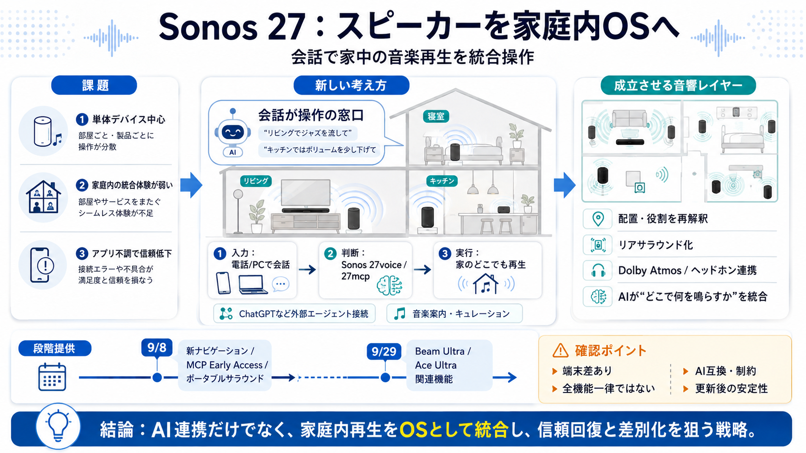

Sonos 27 Explained: AI Agents, MCP and New Audio ...
September 01 2026 Sonos has introduced Sonos 27, the next generation of the software platform powering its connected sp…

スピーカーを「AI接続された制御レイヤー」として再定義し、会話で家中の音楽再生を操作する狙いを整理します。
Sonosはこれまで「デバイス単体」の体験に強い一方で、家庭内の統合体験が薄くなりやすい課題を抱えてきました。
Sonos 27は単なる機能追加ではなく、Sonos自身のアシスタントと外部エージェントをつなぎ、家庭内の再生操作をOSとして統合する設計です。
中心は Sonos 27voice と Sonos 27mcp（後述）です。
ChatGPTユーザーは電話やPCの会話から離脱せず、家のどこでも音楽再生を依頼できる方向性が示されています。
従来はアプリやデバイスごとに操作が分かれがちでしたが、Sonos 27ではAIが「操作の窓口」になり、家庭内へ指示を配ります。
Conrad氏は、ハードに偏っていた結果として統合体験が弱かった示唆をし、Sonos 27を「システムとして機能する土台」と位置づけています。
AI連携だけでなく、スピーカーの役割を変えたり転用したりする仕組みが同時に提示されています。
システム志向を支える具体例として、Dolby Atmos対応やヘッドホン連携などが挙げられています。
提供開始は一斉ではなく、9月8日〜と9月29日で段階的に展開されるとされています。
対象はS2製品全体に広がる一方で、機能は端末により異なる可能性が示されています。
記事には、AI連携にパートナー関係や制約が絡み得ることが含まれています（例：Geminiは端末で使えない記述）。
Sonos 27は「AI連携」だけでなく、家庭内の再生操作をOSとして統合し、アプリ失敗後の信頼回復と差別化を狙う戦略です。
September 01 2026 Sonos has introduced Sonos 27, the next generation of the software platform powering its connected sp…
Sonos 27mcp, allowing users to connect any outside AI assistant or agent to the system, including OpenAI’s ChatGPT. This…
SANTA BARBARA, Calif., Sept. 1, 2026 — Sonos (Nasdaq: SONO) today introduced Sonos 27, the latest version of the audio o…
An open approach to AI Sonos 27 gives listeners the option to control their system using any AI they prefer, a natural …
Sonos says Sonos 27 will arrive through a software update for all Sonos S2 products, though some features will be limite…